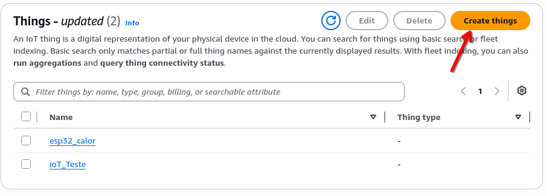
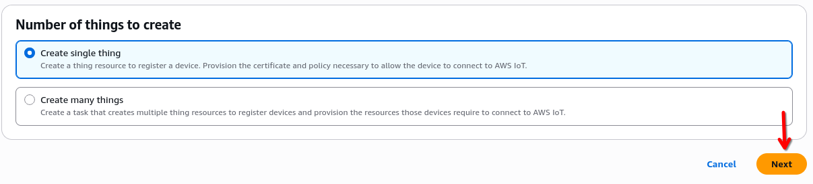
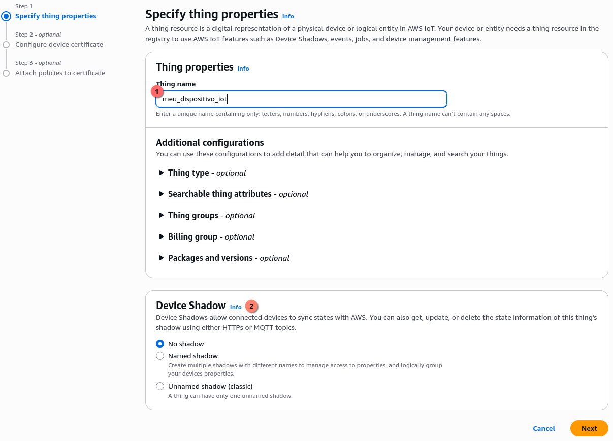
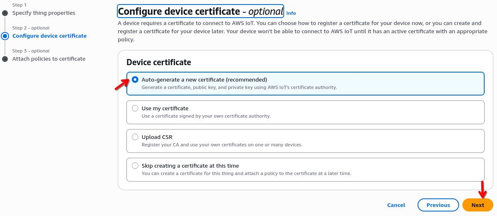
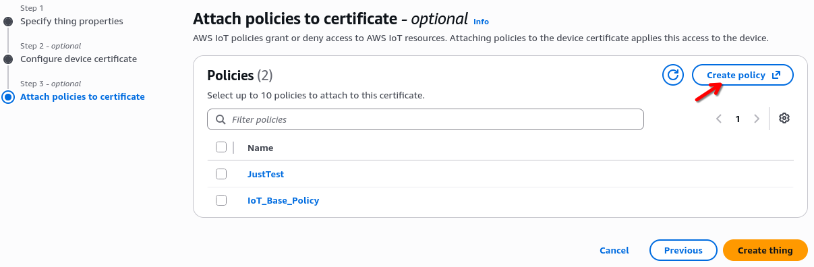
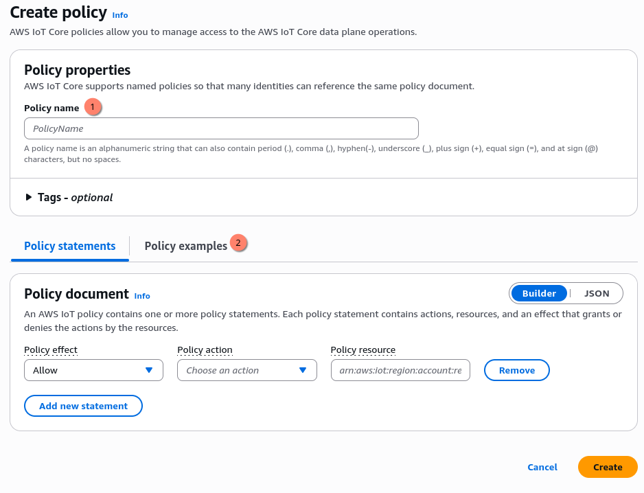
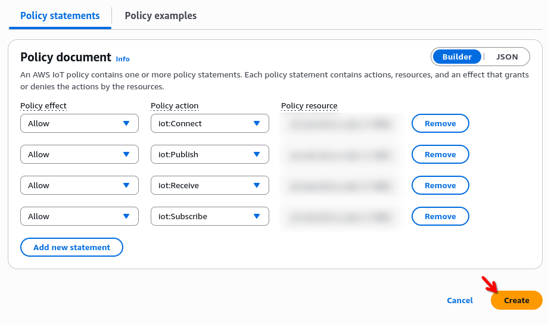
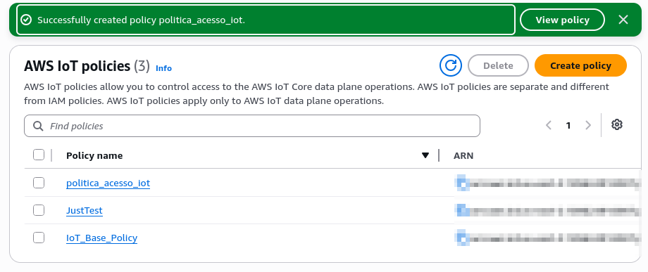
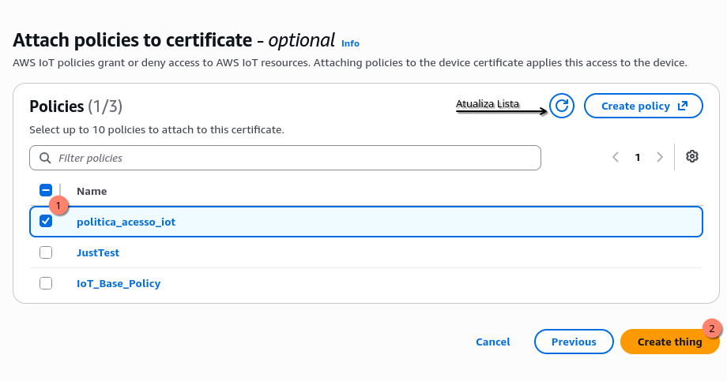
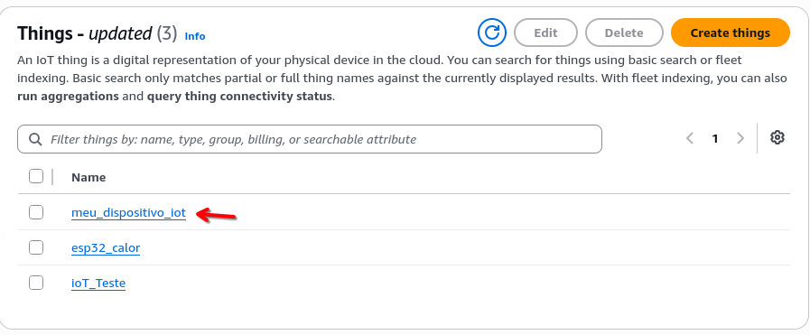

AWS IoT Core: Things
Plataformas IoT
Tudo que vimos até agora se aplica em pequena escala e na forma que chamamos de on-premises, ou seja, com o equipamento situado em nosso ambiente de aplicação. Conforme o volume de clientes, equipamentos e processamento cresce, manter essa infraestrutura começa a ficar mais difícil.
Para isso, tanto a AWS como Azure contam com soluções focadas especificamente em IoT, IoT Core e IoT Hub especificamente. Claro que é possível construir essa mesma infraestrutura em plataformas que não tem esse produto dedicado, contudo essas ferramentas facilitam diversos pontos do processo de gerenciamento da solução IoT.
Arquitetura de um sistema IoT
Quando pensamos em uma Arquitetura IoT podemos dividi-la em duas seções principais, uma composta pelas “Coisas” que chamamos de edge e outra composta pela cloud. A comunicação entre as duas partes é feita através de um gateway.

Os dispositivos da edge podem se comunicar diretamente com o “Cloud Gateway” caso consigam, como é o caso da ESP32 que já possui módulo WiFi. Ou pode ser necessário agregar as informações dos sensores e controladores em um “Edge Gateway” que esse sim se comunica com o “Cloud Gateway”.

O Cloud Gateway atua como um endpoint único que distribui milhões de conexões MQTT entre múltiplos servidores internos. Ele gerencia o peso das sessões persistentes e a segurança (TLS) de forma nativa, garantindo alta disponibilidade e escalabilidade sem que você precise gerenciar o hardware.
Depois que o gateway recebe a informação da borda, é possível utilizar as ferramentas internas da sua cloud para o consumo, tratamento, e dispersão dos dados, o que garante uma camada maior de segurança de sua aplicação
Caso você utilize uma plataforma cloud que não ofereça o serviço de IoT dedicado, todas as camadas de gerenciamento e segurança deverão ser desenvolvidas por sua solução.
Nos próximos tópicos estaremos configurando o AWS IoT Core para conectar um dispositivo a Cloud.
IoT Core: Criando um Thing.
Depois de feito login em seu console da AWS procure em serviços Internet of Things

Depois procure por IoT Core e acesse.

Para fazer a integração, precisamos criar um “Thing”, no menu esquerdo
procure por Manage > All Devices > Things e acesse.
Nesta pagina é possível gerenciar todos os seus dispositivos. Para criar um novo, clique no botão “Create things”

Podemos criar diversos dispositivos de uma só vez, ou apenas um. Por simplicidade criaremos apenas um. Selecione “Create single thing” e clique em Next

O próximo passo é definir alguns atributos da “Coisa” que estamos criando. Ela irá precisar de um nome identificador. Este será o ID do dispositivo na plataforma.
Device Shadow (Gêmeo Digital): A nuvem mantém uma cópia virtual do estado do dispositivo. Se um sensor ficar offline, o aplicativo lê o “Shadow”. Quando o sensor volta, a AWS sincroniza o estado automaticamente. Para este documento não utilizaremos.

Agora a AWS irá pedir para criar um certificado para o dispositivo se conectar a plataforma. Selecione “Auto-generate a new certificate” assim a amazon irá gerar todos os certificados necessários. Depois de selecionado clique em Next

Próximo passo é criar uma política de acesso, que é responsável por habilitar ou negar o acesso a serviços dentro da plataforma. Para criar uma nova política clique em “Create policy”. Uma nova aba será aberta para fazer esse processo.

Precisamos definir um nome para essa nova politica de acesso, e depois vamos utilizar as “Policy Examples” para iniciar a criação dela.

Ao clicar em “Policy Examples” procure por aquela que com o nome Publish to
any topic prefixed by the thing name, clique em sua caixa de seleção e depois
em _“Add to policy”

Feito isso, alguns statements já foram criados para nós, e o mais importante com o campo Policy resource correto, que é algo como
arn:aws:iot:<Sua Região>:<Seu User ID>:client/${iot:Connection.Thing.ThingName}
Agora abra o editor json e deixe o como o código abaixo. Preste atenção na string do Resource! Você deverá trocar pelas suas informações
{
"Version": "2012-10-17",
"Statement": [
{
"Effect": "Allow",
"Action": "iot:Connect",
"Resource": "arn:aws:iot:<Sua Região>:<Seu User ID>:client/${iot:Connection.Thing.ThingName}"
},
{
"Effect": "Allow",
"Action": "iot:Publish",
"Resource": "arn:aws:iot:<Sua Região>:<Seu User ID>:topic/esp32/${iot:Connection.Thing.ThingName}/*"
},
{
"Effect": "Allow",
"Action": "iot:Receive",
"Resource": "arn:aws:iot:<Sua Região>:<Seu User ID>:topic/esp32/${iot:Connection.Thing.ThingName}/*"
},
{
"Effect": "Allow",
"Action": "iot:Subscribe",
"Resource": "arn:aws:iot:<Sua Região>:<Seu User ID>:topicfilter/esp32/${iot:Connection.Thing.ThingName}/*"
}
]
}
Podemos utilizar a seguinte politica para testes, contudo essa é uma falha crítica de segurança
{
"Version": "2012-10-17",
"Statement": [
{
"Effect": "Allow",
"Action": "iot:*",
"Resource": "*"
}
]
}
Essa política concede poder total (Allow *) sobre todo o seu ambiente IoT.
O Problema: Ela viola o Princípio do Menor Privilégio. Se um único sensor for invadido, o hacker ganha a “chave mestra” para controlar, espiar ou deletar toda a sua frota. Segurança zero!
Feito isso verifique se está tudo correto, e clique em “Create”

Esta política implementa um isolamento de segurança por dispositivo:
O que faz: Permite conectar, publicar, receber e subscrever mensagens.
A restrição: O dispositivo só pode atuar em recursos (tópicos e IDs) que correspondam exatamente ao seu próprio Thing Name.
Na prática, ela impede que um dispositivo interaja com os dados de outro, mesmo usando a mesma política.
Depois da politica criada ela estará listada em sua lista de políticas

Agora volte a página anterior, se sua nova politica não estiver listada, clique no botão de atualização. Selecione a política recem criada, e clique em “Create thing”.

CUIDADO! Depois de clicar em “Create thing” será apresentado um pop-up para download dos certificados. Essa é a unica vêz que eles podem ser baixados. Certifique-se de fazer download de todos e guarda-los em um lugar seguro.

Esses certificados serão utilizados para garantir a identidade de nossos dispositívos.
Depois de feito o download, clique em “Done”, seu dispositívo deverá ser listado na lista de Things
